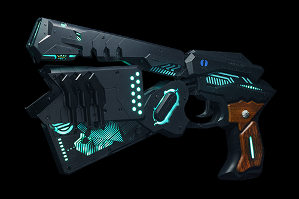

Главная страница
Мир, в котором психическое состояние и личность человека стало возможным измерить в количественной мере. Мир, в котором вся информация записывается и многократно проверяется. А машины судят человеческие души... ПСИХОПАСПОРТ.
К 2112 году прогрессивная Япония смогла создать утопичную идеалистическую модель общества, считавшуюся философами древности недостижимой. Толчком к этому послужила замена устаревшего государственного аппарата многофункциональной системой под названием «Сивилла», на которую люди возложили ответственность за сохранение порядка и обеспечение безопасности в обществе. Введение безотказной системы с неограниченными правами способствовало снижению преступности почти до нуля. На основе данных «психопаспорта» — уникальной характеристики личности — система мгновенно определяет индивидуальный коэффициент преступности — вероятность, с которой человек может совершить преступление, указанная в числовом значении — и, если коэффициент превышает норму, беспристрастно судит его как потенциального преступника.
С приходом «Сивиллы» нормализовался уровень спокойствия среди населения. Постепенно люди превратились в бесстрашную инертную массу, толпу, неспособную распознать преступление, совершаемое прямо у всех на глазах. Лишённая погрешностей система показала, что вовсе не лишена погрешностей. Её слабость, как ни странно, оказалась в людях, которых она защищает. Полностью избавиться от потенциальных преступников невозможно, и случаи насилия, хоть и редко, но будут происходить. Те, чей коэффициент преступности ненамного превышает норму, «Сивилла» отправляет на принудительное лечение, а тех, кто переступил черту безвозвратно — приговаривает к уничтожению. Поэтому система, способная только судить, нуждается в исполнителях — тех, кто готов раз за разом приводить приговор в исполнение без страха «запятнать» свой «психопаспорт», тех, кто почти переступил черту. Бюро Общественной Безопасности, куда поступает на службу молодая следователь Аканэ Цунэмори, располагает такими людьми — «карателями», выученными охотиться на преступников.
 Сюжет разворачивается вокруг молодой и наивной Акане Цунамори, нового инспектора Первого Подразделения Бюро Общественной Безопасности. Первый сезон повествует о её первом годе службы, в течение которого всем становится ясно, что она отнюдь не та проста, как казалось на первый взгляд. А события второго сезона рассказывают нам о ней уже как о талантливом руководителе, которого уважают и подчиненные, и друг, и инспектора, и даже простые горожане. В третьем же сезоне она сама оказыается разжалована в "каратели".